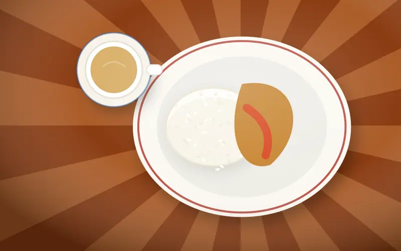
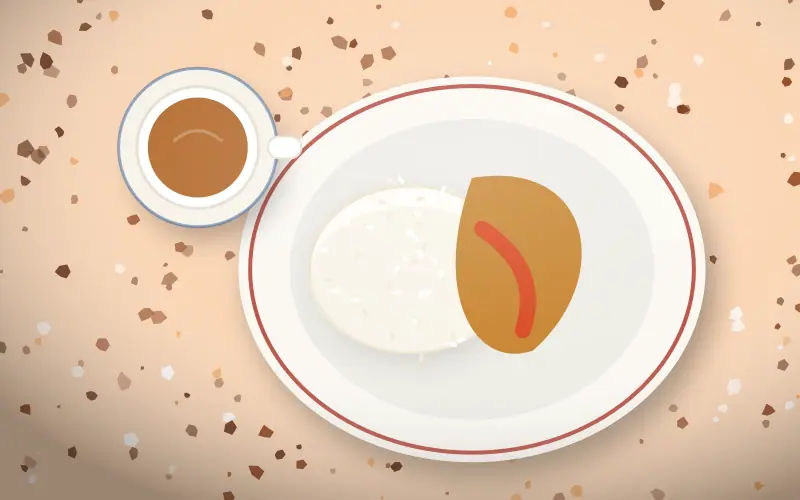
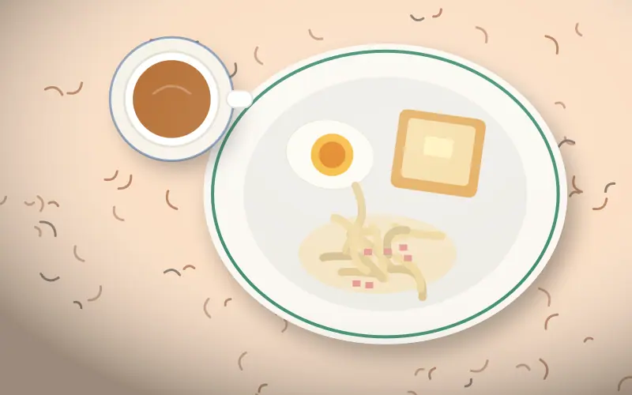
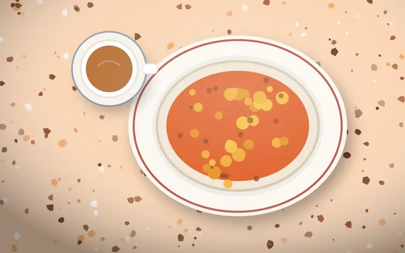
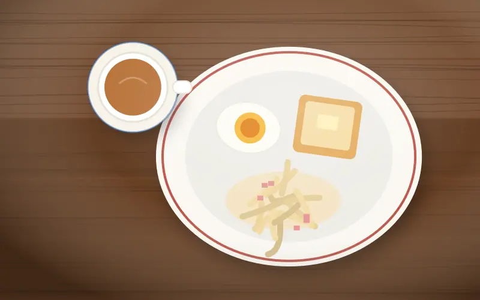
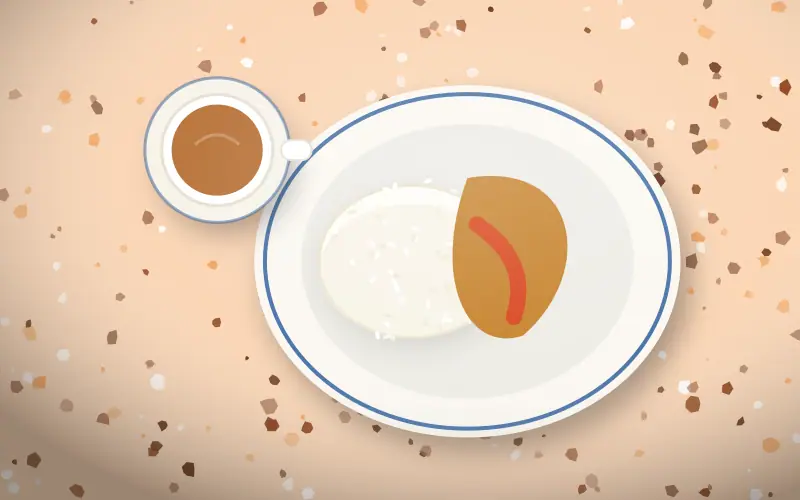
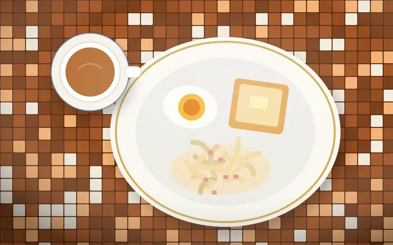
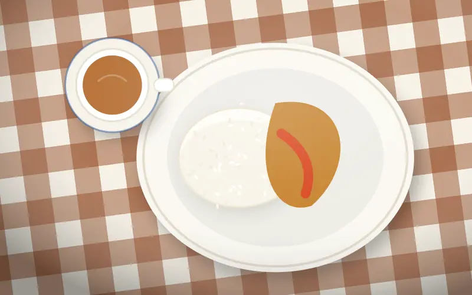
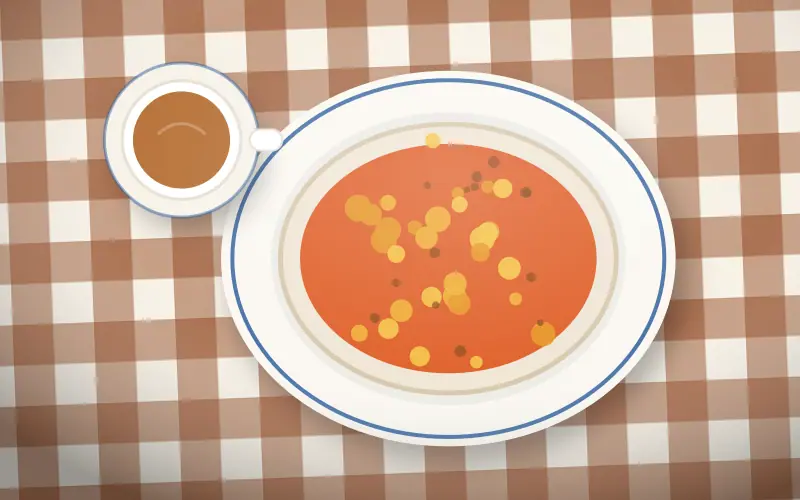
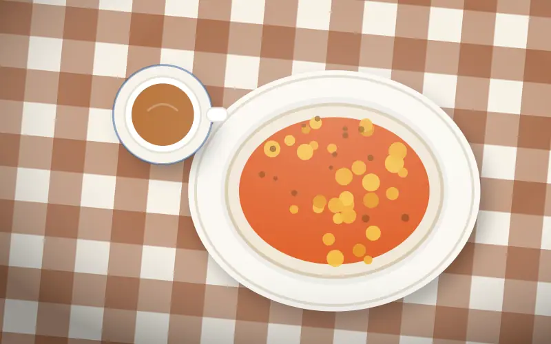

Cheap HK fast food in Hong Kong 快餐
25 places, from HK$30, ranked by Value Score.
 Fairwood (Chai Wan)大快活（柴灣） · Chai Wan$32
Fairwood (Chai Wan)大快活（柴灣） · Chai Wan$32 
Maxim's MX (Tseung Kwan O)美心MX（將軍澳） · Tseung Kwan O$33 Café de Coral (Wong Tai Sin)大家樂（黃大仙） · Wong Tai Sin$34
Café de Coral (Wong Tai Sin)大家樂（黃大仙） · Wong Tai Sin$34  Fairwood (Kwai Fong)大快活（葵芳） · Kwai Fong$36
Fairwood (Kwai Fong)大快活（葵芳） · Kwai Fong$36 
Maxim's MX (Kwai Chung)美心MX（葵涌） · Kwai Chung$33 Fairwood (Tuen Mun)大快活（屯門） · Tuen Mun$30
Fairwood (Tuen Mun)大快活（屯門） · Tuen Mun$30 
Café de Coral (Ma On Shan)大家樂（馬鞍山） · Ma On Shan$34 Café de Coral (Tuen Mun)大家樂（屯門） · Tuen Mun$34
Café de Coral (Tuen Mun)大家樂（屯門） · Tuen Mun$34  Maxim's MX (Tai Po)美心MX（大埔） · Tai Po$33
Maxim's MX (Tai Po)美心MX（大埔） · Tai Po$33  Fairwood (Tseung Kwan O)大快活（將軍澳） · Tseung Kwan O$38
Fairwood (Tseung Kwan O)大快活（將軍澳） · Tseung Kwan O$38 
Maxim's MX (Diamond Hill)美心MX（鑽石山） · Diamond Hill$40 Café de Coral (Kennedy Town)大家樂（堅尼地城） · Kennedy Town$42
Café de Coral (Kennedy Town)大家樂（堅尼地城） · Kennedy Town$42 
Fairwood (Ap Lei Chau)大快活（鴨脷洲） · Ap Lei Chau$50
Café de Coral (Tsing Yi)大家樂（青衣） · Tsing Yi$50
Fairwood (Fanling)大快活（粉嶺） · Fanling$50 Café de Coral (Kwun Tong)大家樂（觀塘） · Kwun Tong$52
Café de Coral (Kwun Tong)大家樂（觀塘） · Kwun Tong$52  Fairwood (Tai Po)大快活（大埔） · Tai Po$50
Fairwood (Tai Po)大快活（大埔） · Tai Po$50  Fairwood (Tung Chung)大快活（東涌） · Tung Chung$52
Fairwood (Tung Chung)大快活（東涌） · Tung Chung$52 
Café de Coral (Hung Hom)大家樂（紅磡） · Hung Hom$52 Café de Coral (Sheung Shui)大家樂（上水） · Sheung Shui$58
Café de Coral (Sheung Shui)大家樂（上水） · Sheung Shui$58  Fairwood (Wong Tai Sin)大快活（黃大仙） · Wong Tai Sin$58
Fairwood (Wong Tai Sin)大快活（黃大仙） · Wong Tai Sin$58 
Maxim's MX (Sha Tin)美心MX（沙田） · Sha Tin$62 Café de Coral (Tin Shui Wai)大家樂（天水圍） · Tin Shui Wai$52
Café de Coral (Tin Shui Wai)大家樂（天水圍） · Tin Shui Wai$52  Café de Coral (Tai Po)大家樂（大埔） · Tai Po$58
Café de Coral (Tai Po)大家樂（大埔） · Tai Po$58 
Café de Coral (Aberdeen)大家樂（香港仔） · Aberdeen$62More guides
Best meals under HK$50Cheap eats under HK$30Best value for moneyLate-night cheap eatsHidden gemsCheap breakfast in Hong KongRoast Meats 燒味Cha Chaan Teng 茶餐廳Dim Sum 點心Noodles 粉麵Congee 粥品Claypot 煲仔Cantonese 粵菜Seafood 海鮮Desserts 甜品Bakery 餅店Street Snacks 小食Vegetarian 素食HK Fast Food 快餐Rice Noodles 米線Thai 泰國菜Curry 咖喱Japanese 日式Vietnamese 越南菜Taiwanese 台灣菜Shanghainese 上海菜Dumplings & Northern 北方菜HK-style Western 港式西餐